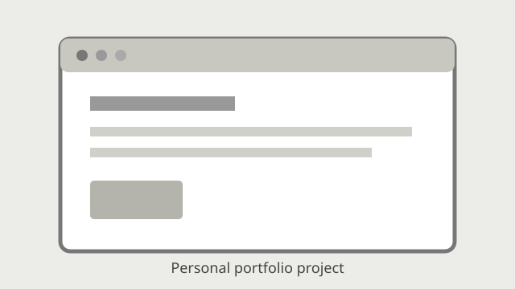
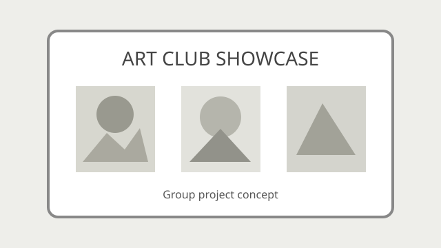

My Projects and Learning Work
This page presents projects I have practised or worked on as part of my Software Engineering learning journey. Some are ongoing, so I will update this page as they develop.
Project 1: Personal Portfolio Website

Status: In progress
This project brings together information about my background, education, skills, projects, interests, and contact details.
What I am practising
- Creating a valid HTML document.
- Connecting separate pages with hyperlinks.
- Using semantic HTML elements.
- Organising files and folders.
- Publishing a project with GitHub.
Project 2: University Art Club Management and Showcase Platform

Status: Group project in development
This is a group project for Internet Programming. Our goal is to create a platform where university art club members can share artwork, discover inspiration, collaborate on creative projects, and showcase their work.
Planned sections
- Home page
- Club introduction
- Featured artwork
- Artwork showcase
- Member submissions
- Artwork descriptions
- Club information
- Activities
- Group projects
This is a group project, not a completed individual project.
Other Learning Practice
- C++ exercises involving conditions, loops, functions, arrays, pointers, and searching.
- Java exercises involving input, loops, arrays, ArrayLists, and introductory classes.
- Git and GitHub practice involving repositories, commits, branches, and pushing changes.
Achievements and Milestones
- Progressing through a Software Engineering degree.
- Practising programming in C++ and Java.
- Learning to organise and publish web projects.
- Working with a team on an Internet Programming project.
My Next Goals
- Complete this multi-page HTML portfolio.
- Become more confident designing programs independently.
- Continue learning web development.
- Build more practical Software Engineering projects.